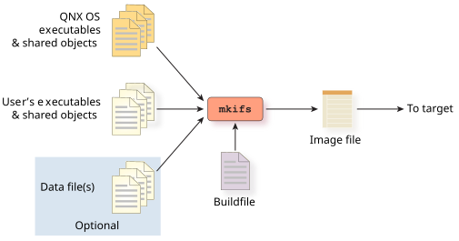

An OS image is created by a program called mkifs (make image filesystem), which accepts information from two main sources: its command line and a buildfile. You can change the buildfile to configure the OS image.
The diagram below shows the how mkifs uses rules from the buildfile to combine OS and user executables, shared objects and data files to create an OS image, which can be transfered to the target system and booted.

For more information about mkifs, see mkifs in the Utilities Reference; for more information about the OS image buildfile, see the OS Image Buildfiles chapter.
You may also want to use the diskimage utility, which creates an image for a partitioned medium. The partitioned medium image can contain any number of filesystem images (for example, Power-Safe filesystems that were created using mkqnx6fsimg or mkqnx6fs).
mkifs shell.bld shell.ifs
This command tells mkifs to use the buildfile shell.bld to create the image file shell.ifs.
You can also specify command-line options to mkifs. Since these command-line options are interpreted before the actual buildfile, you can add lines before the buildfile. You can do this if you want to use a makefile to change the defaults of a generic buildfile.
mkifs -l "[image=0x10000]" buildfile image
For more information, see mkifs in the Utilities Reference.
Offset Size Name
0 100 Startup-header flags1=0x1 flags2=0 paddr_bias=0x80000000
100 a008 startup.*
a108 5c Image-header mountpoint=/
a164 264 Image-directory
---- ---- Root-dirent
---- 12 usr/lib/ldqnx-64.so.2 -> /proc/boot/ldqnx-64.so.2
---- 9 dev/console -> /dev/ser1
a3c8 80 proc/boot/.script
b000 4a000 proc/boot/procnto
55000 59000 proc/boot/libc.so.6
---- 9 proc/boot/libc.so -> libc.so.6
ae000 7340 proc/boot/devc-ser8250
b6000 4050 proc/boot/esh
bb000 4a80 proc/boot/ls
c0000 14fe0 proc/boot/data1
d5000 22a0 proc/boot/data2
Checksums: image=0x94b0d37b startup=0xa3aeaf2
The more -v (verbose
) options you specify to
dumpifs, the more data you'll see.
For more information about dumpifs, see its entry in the Utilities Reference.